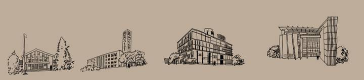
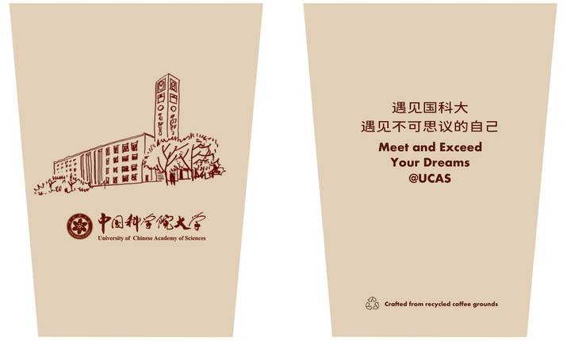
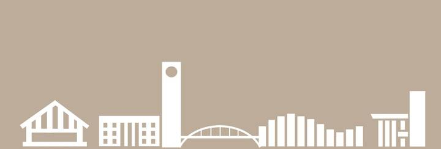

UCAS Campus Cup。
A little of campus, taken home
A hand-painted campus panorama becomes a cup and its packaging. The design draws on the Yuquanlu, Zhongguancun and Yanqihu campuses of the University of Chinese Academy of Sciences (UCAS).
Back on campus
Years after graduating, waanng returned to three UCAS campuses to paint their buildings and grounds as a long, continuous panorama. That return became the starting point for the cup.
Finding the right lines
Selected buildings are redrawn as a set of illustrations, taking them from the continuous panorama to the curved surface of a cup.

A familiar view, every day
Building illustrations and text bring familiar places into daily use. The proposal uses recycled coffee grounds as a material for the cup.

Three campuses, one skyline
The packaging brings buildings from all three campuses into a continuous, geometric skyline—a new way to unfold the panorama. Shown here is a detail of the packaging design.

- Based on
- waanng’s campus panorama and architectural sketches
- Design includes
- Cup illustrations and packaging
- On this page
- Graphic design proposal for a campus gift cup
A reminder of campus, with every cup.
Work with us